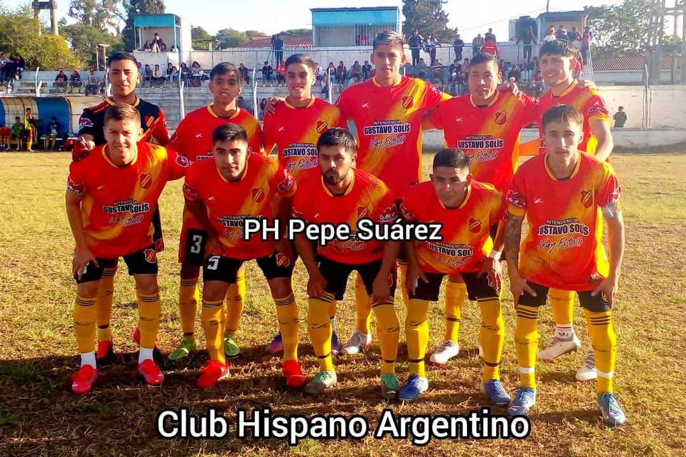

LIGA ROSARINA DE FUTBOL
EQUIPOS ROSARINOS
NORMAL ROSARINO

NORMAL ROSARINO Daniel AlonsoEne 09, 2016Comentarios DesactivadosEn NORMAL ROSARINOLIKE Esta institución de Villa Manuela, tuvo su origen un 9 de septiembre del año 1915. Su fundador fue el Sr. Pablo Flores, que le puso el nombre en forma desinteresada. El primer presidente fue don Rafael Juárez, luego lo hizo Simón Romano (ya fallecido) que supieron dar todo de si en condición de dirigentes, sin olvidarnos de don Lucindo Bustos, Juan Salinas (padre), Everardo Ávila, el padre del Dr. Reinaldo Robles, Higinio “Chano” Romano, Juan Marcial, Justino Haro, Miguel Norberto Sanguino y su familia que con mucho esfuerzo lograron el engrandecimiento del club. En el año 1974, asume como presidente el Sr. Ramón Jiménez (Meyi) en los momentos más difíciles de la institución, contando con el apoyo incondicional de Carlos Farfán, Víctor Galván, el Flaco Avendaño, Carlos Tronchuk, Miguel Rojas, Antonio Torres, Mario Teseyra, Lorenzo Guerra, Simón Romano y Carlos Mazola (ya fallecido). Ese mismo año, club logra la personería jurídica y la compra de los terrenos, donde actualmente funciona la sede social; gracias al apoyo del barrio de Villa Manuela. Siempre estando al servicio de la comunidad rosarina brindando clases de apoyo a niños escolares, con la desinteresada colaboración de los maestros Pila Álvarez, Elvio Díaz y Clotilde Montenegro, también se colaboro con el hospital local y escuelas del departamento. Desde ese entonces comenzó a llamarse Club Social Cultural y Deportivo Normal Rosarino. En el año 1990, asume la presidencia Higinio “Chano” Romano, siendo la misma una gestión exitosa. En 1993 preside el club Francisco Álvarez y como visé Chano Romano. En el periodo 1994 en adelante, se hace cargo Meyi Jiménez siendo vicepresidente Ramón Britos. En 1998 la presidencia es del Sr. Juan Salinas y visé Osvaldo “Valo” Romano, logrando después de 25 años el titulo de Campeón de Primera División, y la participación del argentino B, en dos años consecutivos, siendo el orgullo de nuestra institución.
PROGRESO
Club Social Cultural Atlético Progreso San Martín 210- (4190) Rosario de la Frontera Personería Jurídica Resolución Nº 902 D- 03/09/1980 Fundado el 29/11/1949 El 29 de Noviembre de 1949 nació en Villa Vivero, barriada del Sur de la ciudad de Rosario de la Frontera, el Club Atlético Progreso o «Los Tirapiedras» como lo registra el cariño popular. Entonces era Presidente de la Liga Rosarina de Fútbol el Sr. Abel Flores. Nombres como Luis Coronel, Gustavo Taboada Pazo, Pedro Vega, Negrito Alfaro, Margarita Sanguino, Berena de Otarola, Solanis, Gutiérrez, Victoria Aponte de Narváez, Emilia Jordán, Zurdo Miranda otros aparecen entre los primeros que trabajaron por la institución. Según los memoriosos, sus antecedentes se hallan en un Club denominado «Ovando» que existió en 1939.
GUEMES

(1.916-2016) 100 Años de Gloria El Centro Social, Cultural y Atlético General Guemes, fue fundado el 16 de Junio de 1916, es la Institución decana de Rosario de la Frontera, siendo su primer Presidente el señor Servando Leal, padre del teniente General Jorge Edgard Leal, esta institución nació con sólidos e irrefutables fundamentos que tuvo que ver con la intención y decisión de un grupo de vecinos inspirados en una loable iniciativa. * También se destacaron como dirigentes los señores: Roque Lazarte, Félix Cantón, Manuel Teseyra, Juan Felipe Ponce, Manuel Rivella, Andrés Díaz, Juan Carlos Zarzuri, Luis Suárez, Lorenzo Guitian, Daniel Porcelo, Ramón, Arnaldo Felipe, Juan Carlos y Pedro Ernesto Figueroa, entre otros, quienes afrontaron la ardua tarea de llevar la institución, resintiendo el embate de los tiempos y adversidades. * Desde el año 1.982 a la fecha los socios que detallamos a continuación fueron presidentes de la entidad: Pedro Ernesto Figueroa, Dr. Carlos Daniel Porcelo, Rodolfo Ernesto Molina, Dr. José Nicolás Ferrari, Armando Javier Calatayud, Carlos Marcelo Paganini y Roberto Adrián Ponce. * El día 19 de noviembre de 1.988,y bajo la presidencia del Dr. Daniel Porcelo, se adquiere a la sucesión, Eduardo Sapag el local ubicado en Islas Malvinas Nº 932 denominado “Ruta Libre”, donde hoy funciona la Sede Social del Club. * Guemes se hizo grande por que las comisiones directivas, las que siempre estuvieron integradas en su mayoría por hombres, tuvieron el respaldo incondicional de una comisión de damas, a continuación citaremos las mujeres que integraron algunas de ellas: Elena Nieva, Susana Quintana, Maria Inés Menú de Porcelo, Ema Molina de Celiz, Carmen Menú de Sapag, Tita Alonso, Elsa Alonso, Irma Zarzuri, Virginia Ibáñez, Yolanda Zarzuri, Nora Lazarte de Sapag entre otras.
CHACARITA

Club Social Cultural y Deportivo Atlético Chacarita Júnior Guemes 725- (4190) Rosario de la Frontera Personería Jurídica Decreto Nº 292-13/04/1976 Fundado el 22/10/1974
BELGRANO
Club Sportivo Ferrocarril General Belgrano José Hernández s/n- (4190) Rosario de la Frontera – Personería Jurídica Decreto Nº 3055- 17/10/1975 – Fundado el 16/06/1916
VIALIDAD
Centro Social Cultural y Atlético Vialidad Sarmiento – (4190) Rosario de la Frontera Personería Jurídica Resolución Nº 862 D- 29/09/1982 Fundado el 18/10/1981
HISPANO ARGENTINO
El Club Atlético Hispano Argentino fue fundado el 13 de abril de 1923 cuando un grupo de inmigrantes españoles establecidos en Rosario de la Frontera se reunió en una vieja colonia agrícola para organizar un nuevo club social y deportivo. La nostalgia por la patria lejana (España) y el cariño por la nueva patria que los había acogido (Argentina) los llevó a fusionar en el nombre del club recién creado los nombres de ambas: “Hispano Argentino”. Un hispano argentino es un español radicado en la Argentina, en este caso, un español radicado en Rosario de la Frontera.